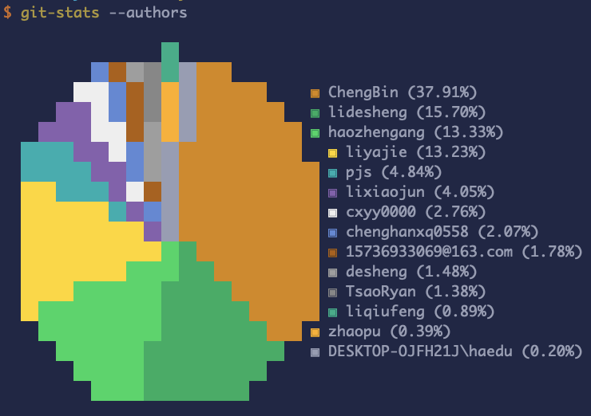
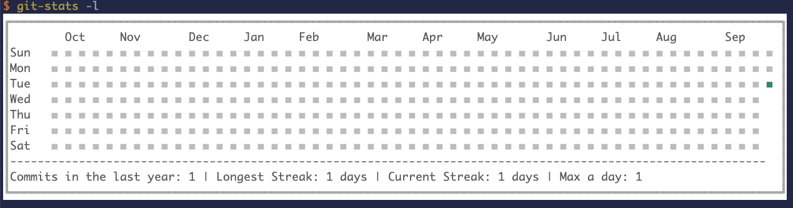

git-stats
Local git statistics including GitHub-like contributions calendars.
remark：https://www.npmjs.com/package/git-stats#what-about-the-github-contributions-calendar
$ git-stats --help
Usage: git-stats [options]
Local git statistics including GitHub-like contributions calendars.
Options:
-r, --raw Outputs a dump of the raw JSON data.
-g, --global-activity Shows global activity calendar in the current
repository.
-d, --data <path> Sets a custom data store file.
-l, --light Enables the light theme.
-n, --disable-ansi Forces the tool not to use ANSI styles.
-a, --authors Shows a pie chart with the author related
contributions in the current repository.
-u, --until <date> Optional end date.
-s, --since <date> Optional start date.
--record <data> Records a new commit. Don't use this unless you are
a mad scientist. If you are a developer just use
this option as part of the module.
-h, --help Displays this help.
-v, --version Displays version information.
Examples:
$ git-stats # Default behavior (stats in the last year)
$ git-stats -l # Light mode
$ git-stats -s '1 January 2012' # All the commits from 1 January 2012 to now
$ git-stats -s '1 January 2012' -u '31 December 2012' # All the commits from 2012
Your commit history is kept in ~/.git-stats by default. You can create
~/.git-stats-config.js to specify different defaults.
Documentation can be found at https://github.com/IonicaBizau/git-stats.
usage

